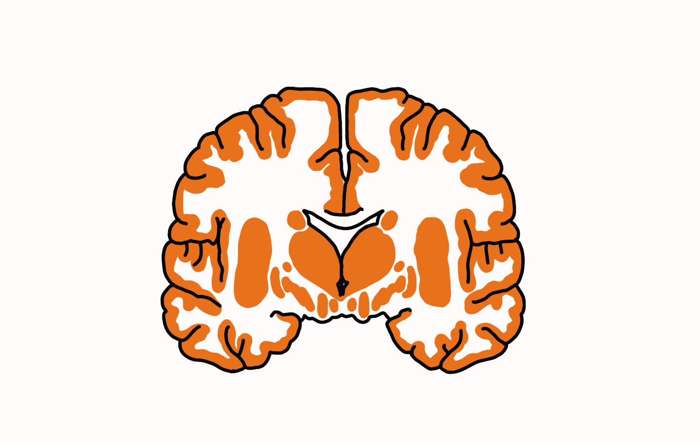

A Study in Neural Plasticity
Yoga has been around for thousands of years, and has always been associated with wellbeing. Yoga is not only good for the body, but the brain! When doing yoga intentionally it could be considered a “moving meditation” which can significantly improve mental health and even the structure of your brain. Research has found that yoga can influence brainwaves, gray matter, and neural connectivity, which improves mental cognition and emotional regulation (Desai et al., 2015; Gothe et al., 2019; Migala, 2018). Desai et al. (2015) explains that “yoga positively affects brainwave activity and brain structure, linked to improve cognition and mood”. Even short term practices of yoga could produce these benefits in brain health and activity, long term practice shows more profound differences in the brain (Gothe et al., 2019).
Positive changes in brainwave activity is one of the most beneficial ways yoga can improve mental health, specifically brainwaves linked to cognitive and emotional outcomes. Alpha waves typically increase when one is practicing yoga which can cause a person to feel calm, and relaxed often reducing anxiety symptoms. Beta waves also increase which are linked to a person's focus, and active thinking skills. Theta waves are also increased which are associated with memory processing. According to Desai et al. (2015) “yoga can stimulate multiple brainwaves simultaneously, depending on the practice”. These three brainwaves being stimulated at once can cause deep relaxation, relief, and improve mental clarity and focus all at the same time. If one wishes to increase a specific brainwave they must choose the correct type of yoga, as posture, breathing, and meditation are all types of yoga targeting specific brain waves and activity.
Yoga has also been found to make structural changes in the brain. MRI studies show increases in gray matter in parts of the brain in control of memory, attention, and self regulation. The hippocampus is a part of the brain associated with memory and focus, people who practice yoga have shown to have larger hippocampus and increased gray matter (Gothe et al., 2019). The prefrontal cortex which is responsible for active decision making shows “greater cortical thickness” suggesting it strengthens the core executive functioning part of the brain. Yoga is a form of moving meditation as well as a low effort workout for your mind and body, proven to literally change the way your brain functions. People who practice yoga have also shown reduced activity in the amygdala which is a place where stress and negative thoughts live, this reduced activity of negative thoughts can significantly improve emotional regulation skills (Gothe et al., 2019). These structural changes suggest routine practice of yoga can change the structure of your brain for the better and improve mental clarity on a day to day basis.

This sketch shows gray matter - in the interaction the gray matter would increase in size on scroll.According to Migala (2018), regularly practicing yoga can improve executive function especially in adults. She also claims that the meditation piece of yoga can increase brain volume in areas related to awareness, attention, and self reflection which can shrink with age. Another benefit is greater body awareness helping to keep the body feeling young, this happens partly due to certain movements in yoga as well as the meditation piece of yoga that can enlarge the right insula (body awareness region). Migala (2018) recommends doing yoga at least two times per week to notice the benefits of practicing yoga.
Overall yoga has many benefits for mental health including enhanced mental cognition, memory, attention, emotional regulation, reflection, and focus. Many people start taking supplements to help improve these beneficial effects when in reality nothing is going to help but your habits, and practices. Yoga increases gray matter which supports mental cognition, decision making and memory. It also increases alpha, beta, and theta waves which help with relaxation, focus, and memory processing. Additionally yoga has been found to reduce activity in the amygdala causing symptoms of anxiety and chronic stress to decline. Yoga can physically change the way your brain is structured. For example, it can thicken the structure of the prefrontal cortex, strengthening decision making and active thinking skills. It also can enhance the right Insula increasing body awareness, as well as enlarge the hippocampus which is responsible for long and short term memory processing.